Tu vas bâtir un socle octogonal mouluré dont toutes les cotes viennent du nombre d'or, puis y planter un dé en équilibre sur un de ses coins — et creuser sa place dans le socle.
🧭 Comment lire ce TP. En clair, ce que tu fais.
En italique coloré, ce que tu dois voir se
produire à l'écran — si tu ne le vois pas, ne continue pas : reprends l'étape.
Les encadrés orange préviennent des pièges. À la fin de chaque partie, une image te montre
ce que tu dois obtenir : compare, tu n'as besoin de personne pour te corriger.
Avant de commencer, deux choses.
🌐 Cette activité demande une connexion Internet, du début à la fin. Onshape fonctionne dans le navigateur et n'a aucun mode hors connexion : sans réseau, la séance ne peut pas avoir lieu, elle se reporte. La connexion se fait avec le compte de la classe, pas avec un compte à ton nom.
L'an dernier, en 5e, tu as construit un dé dans Onshape : un cube, ses arêtes arrondies, et des points creusés en calottes sur ses six faces.
Cette année, trois choses changent. Tu vas donner à Onshape des variables au lieu de nombres — et c'est le nombre d'or qui fixera toutes les proportions. Tu vas faire tourner un profil pour obtenir une moulure. Et tu vas déplacer un solide dans l'espace — deux rotations et une translation — pour le poser sur sa pointe.
Tu n'as pas fait le TP du dé en 5e ? Ce n'est pas grave : le dé t'est fourni, tout fini, calottes comprises.
Aide détaillée
1 · Séance 1 · Ranger avant de commencer
Comme chaque fois : on range d'abord. Un travail qu'on ne retrouve pas à la séance suivante est un travail perdu.
Dans Onshape, clique sur Créer en haut à gauche, puis sur Document…Une fenêtre Nouveau document s'ouvre, avec un champ Nom du document déjà sélectionné.
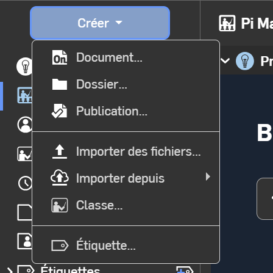
Écris Dé sur sa pointe — TON NOM, puis valide avec Créer.Le document s'ouvre. En bas, deux onglets : Part Studio 1, l'atelier où l'on dessine, et Assembly 1, dont tu n'auras pas besoin ici.
À savoir avant de commencer : Ne mets pas de barre oblique dans le nom : certains exports la refusent.
📷 Capture à venir — l'image de cet écran n'a pas encore été prise. Le texte ci-dessus suffit pour agir : Le document « Dé sur sa pointe — Camille » ouvert, vide.
⚠️ Cette valeur est un exemple : ne la recopie pas sans réfléchir, choisis la tienne.
Fais un clic droit sur l'onglet Part Studio 1, choisis Renommer, écris Presse-papier et valide avec Entrée.L'onglet s'appelle Presse-papier. Le socle et le dé y vivront ensemble : il le faut pour que le dé puisse creuser sa place dans le socle.
À savoir avant de commencer : Un double-clic sur l'onglet n'ouvre qu'un aperçu : passe par le clic droit.
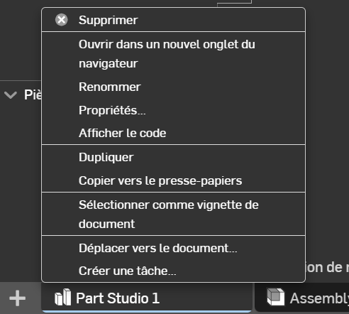
Ne cherche pas de bouton Enregistrer : il n'y en a pas.Rien ne dit « enregistré », et c'est normal : Onshape écrit chaque geste au moment où tu le fais.
🎯 Tu peux passer à la suite quand : Ton document porte ton nom, et son premier onglet s'appelle Presse-papier.
💾 Point de reprise. Tu n'as rien à enregistrer : c'est déjà fait, tout seul, depuis le début. Si le poste redémarrait maintenant, tu retrouverais ton travail exactement ici.
Aide détaillée
2 · Séance 1 · Le nombre d'or dans une boîte à variables
Au lieu de taper 55, 13 ou 5 un peu partout, tu vas ranger les nombres dans des variables, chacune avec un nom. Toutes viendront de deux nombres seulement : M = 89 mm et le nombre d'or φ.
En bas, clique sur le +, puis sur Créer un Variable Studio. Renomme l'onglet Nombre d'or.Un nouvel onglet s'ouvre, avec un tableau vide : c'est ta boîte à variables.
📷 Capture à venir — l'image de cet écran n'a pas encore été prise. Le texte ci-dessus suffit pour agir : Le Variable Studio vide, prêt à recevoir des variables.
Crée la variable phi et donne-lui pour valeur (1 + sqrt(5)) / 2.La ligne phi apparaît, et Onshape affiche sa valeur calculée : environ 1,618.
À savoir avant de commencer : Tape la formule, pas le nombre 1,618 : la formule est exacte, le nombre arrondi ne l'est pas. Le point sert de virgule.
📷 Capture à venir — l'image de cet écran n'a pas encore été prise. Le texte ci-dessus suffit pour agir : La variable phi avec la formule (1 + sqrt(5)) / 2 et sa valeur 1,618.
Crée de la même façon, dans cet ordre, les variables suivantes : M = 89 mm · C = #M / #phi · Hsocle = #M / #phi ^ 4 · Rsocle = #Hsocle / #phi ^ 2 · Rde = #C / #phi ^ 4 · penetr = #M / #phi ^ 6Six lignes de plus. Onshape calcule chacune : C ≈ 55 mm, Hsocle ≈ 13 mm, Rsocle ≈ 5 mm, Rde ≈ 8 mm, penetr ≈ 5 mm.
À savoir avant de commencer : Le # devant un nom veut dire « la variable de ce nom ». Si une ligne s'affiche en rouge, c'est souvent un # oublié ou une faute de frappe dans un nom.
📷 Capture à venir — l'image de cet écran n'a pas encore été prise. Le texte ci-dessus suffit pour agir : Le Variable Studio rempli : phi, M, C, Hsocle, Rsocle, Rde, penetr et leurs valeurs.
🎯 Tu peux passer à la suite quand : Ton Variable Studio contient les sept variables, aucune en rouge, et C vaut à peu près 55 mm.
💾 Point de reprise. Tu n'as rien à enregistrer : c'est déjà fait, tout seul, depuis le début. Si le poste redémarrait maintenant, tu retrouverais ton travail exactement ici.
Aide détaillée
3 · Séance 1 · La plinthe octogonale
La plinthe est la dalle du bas : un octogone régulier, épais comme Hsocle.
Reviens dans l'onglet Presse-papier. Clique sur Esquisse, puis sur le plan Top dans l'arbre.Le plan Top se met à plat face à toi ; les outils de dessin apparaissent.
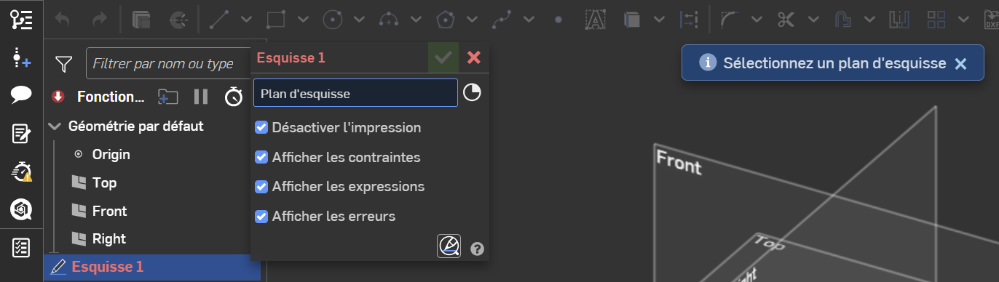
Ouvre la flèche de l'outil polygone et choisis le polygone circonscrit (VERIF nom exact). Règle le nombre de côtés sur 8, puis clique sur l'origine et tire vers l'extérieur.Un octogone régulier apparaît autour de l'origine, avec un cercle de construction qui touche ses huit côtés par l'intérieur.
📷 Capture à venir — l'image de cet écran n'a pas encore été prise. Le texte ci-dessus suffit pour agir : L'octogone régulier tracé autour de l'origine, son cercle de construction à l'intérieur.
Avec l'outil Cote (touche d), cote le diamètre du cercle de construction et tape #M.L'octogone prend sa taille : 89 mm d'un côté plat à l'autre. Il devient blanc : tout est décidé.
À savoir avant de commencer : Tu tapes le nom de la variable, pas 89. Si un jour tu changes M dans le Variable Studio, l'octogone suivra.
📷 Capture à venir — l'image de cet écran n'a pas encore été prise. Le texte ci-dessus suffit pour agir : L'octogone coté #M, entièrement blanc.
Valide l'esquisse. Clique sur Extruder, choisis Nouveau, profondeur #Hsocle, et clique sur la petite flèche Direction opposée pour que la dalle descende sous le plan.Une dalle octogonale grise apparaît sous le plan Top. Le dessus de la plinthe est exactement sur le plan : c'est là que le socle viendra se poser.
📷 Capture à venir — l'image de cet écran n'a pas encore été prise. Le texte ci-dessus suffit pour agir : Le panneau Extruder : Nouveau, profondeur #Hsocle, direction vers le bas, et l'aperçu de la dalle.
📷 Image du résultat à venir — voici ce que tu dois obtenir, en attendant la photo : La plinthe : une dalle octogonale régulière, vue en perspective.
🎯 Tu peux passer à la suite quand : Tu as une dalle octogonale de 89 mm sur plats, dont le dessus est sur le plan Top.
💾 Point de reprise. Tu n'as rien à enregistrer : c'est déjà fait, tout seul, depuis le début. Si le poste redémarrait maintenant, tu retrouverais ton travail exactement ici.
Aide détaillée
4 · Séance 1 · Le profil de la moulure
Au-dessus de la plinthe, un corps rond, mouluré comme la base d'une colonne. On en dessine la moitié d'une coupe ; la révolution fera le reste.
Clique sur Esquisse, puis sur le plan Front, et appuie sur n pour le voir de face.Le plan Front est face à toi ; la plinthe apparaît en coupe sous l'axe horizontal.
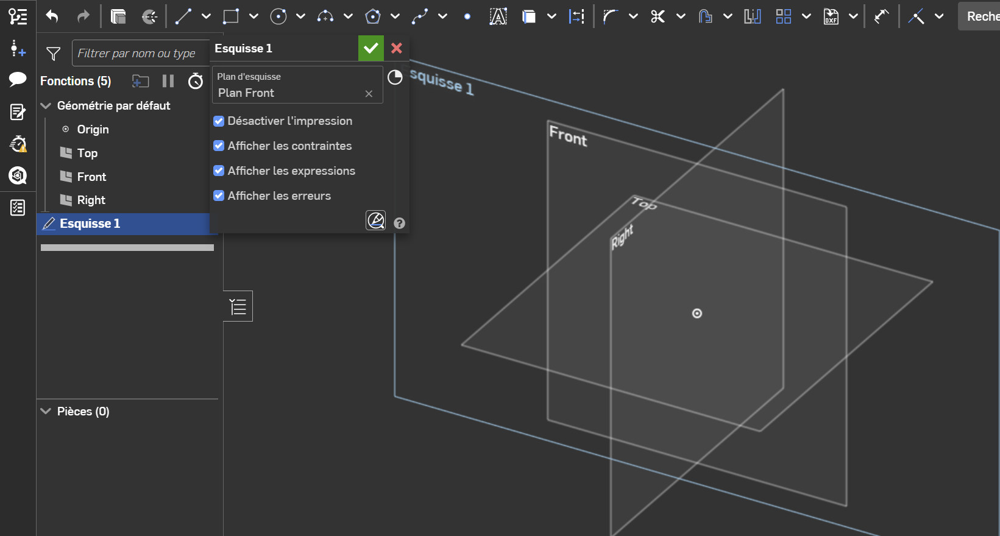
Trace d'abord l'axe : une Ligne verticale partant de l'origine, transformée en Construction (touche q).
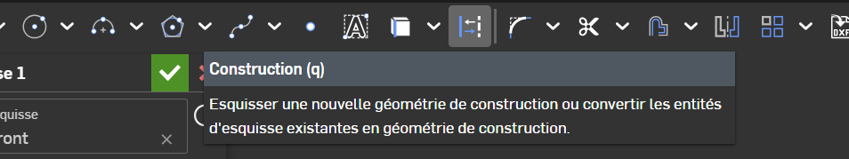
Le trait devient un trait mixte : il guidera la rotation sans faire de matière.
À droite de l'axe, trace le contour avec l'outil Ligne et deux Arcs (VERIF outil arc centré) : de l'origine, 35 vers la droite ; monte de 5 ; un quart de cercle bombé de rayon 5 ; monte de 3 ; un quart de cercle creux de rayon 3 ; monte de 3 ; reviens jusqu'à l'axe à la hauteur 19.Le contour se ferme contre l'axe et l'intérieur se teinte. Le quart de cercle bombé fera un tore, le creux une gorge.
À savoir avant de commencer : Dessine à peu près, puis cote : 35 et 19 pour l'ensemble, 5 et 3 pour les deux arrondis. Le profil doit toucher l'axe sur toute sa hauteur, jamais le traverser.
📷 Capture à venir — l'image de cet écran n'a pas encore été prise. Le texte ci-dessus suffit pour agir : Le profil de la moulure coté : 35, 19, et les deux arcs de rayon 5 et 3, contre l'axe de construction.
📷 Image du résultat à venir — voici ce que tu dois obtenir, en attendant la photo : Le profil de la moulure entièrement blanc, posé contre l'axe, au-dessus de la plinthe.
🎯 Tu peux passer à la suite quand : Ton profil est entièrement blanc, fermé, et posé contre l'axe.
💾 Point de reprise. Tu n'as rien à enregistrer : c'est déjà fait, tout seul, depuis le début. Si le poste redémarrait maintenant, tu retrouverais ton travail exactement ici.
Aide allégée
5 · Séance 1 · Faire tourner la moulure, adoucir la plinthe
Le même geste que l'an dernier pour le socle rond, puis un arrondi sur la plinthe.
Valide l'esquisse, clique sur Pivoter, choisis Ajouter, sélectionne l'intérieur du profil puis l'axe de construction. Vérifie que Pivot complet est coché et valide.
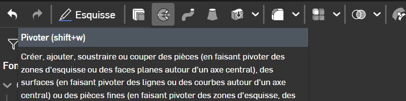
Le corps mouluré apparaît et se soude à la plinthe : une seule pièce dans la liste Pièces.
À savoir avant de commencer : Si tu choisis Nouveau au lieu d'Ajouter, tu obtiens deux pièces séparées. Ce n'est pas grave : un Booléen Union les réunira.
📷 Capture à venir — l'image de cet écran n'a pas encore été prise. Le texte ci-dessus suffit pour agir : Le panneau Pivoter en mode Ajouter, et l'aperçu du corps mouluré sur la plinthe.
Clique sur Congé, sélectionne les huit arêtes verticales de la plinthe et tape #Rsocle pour le rayon.
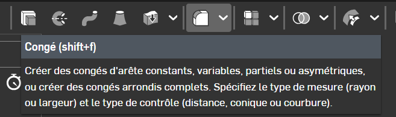
Les huit angles de l'octogone s'arrondissent.
📷 Capture à venir — l'image de cet écran n'a pas encore été prise. Le texte ci-dessus suffit pour agir : Le panneau Congé, rayon #Rsocle, les huit arêtes verticales de la plinthe sélectionnées.
📷 Image du résultat à venir — voici ce que tu dois obtenir, en attendant la photo : Le socle fini : plinthe octogonale aux angles arrondis, surmontée du corps mouluré.
🎯 Tu peux passer à la suite quand : Le socle est une seule pièce, plinthe et moulure soudées.
💾 Point de reprise. Tu n'as rien à enregistrer : c'est déjà fait, tout seul, depuis le début. Si le poste redémarrait maintenant, tu retrouverais ton travail exactement ici.
Aide détaillée
6 · Séance 2 · Faire venir le dé
Le dé t'est fourni, tout fini : 55 mm d'arête (C), arêtes arrondies, 21 points en calottes.
En bas, clique sur le +, puis sur Importer…, et choisis le fichier 📥 de_55_calottes.step fourni avec le TP.Une fenêtre Importer dans Onshape s'ouvre ; laisse les réglages et clique sur Importer. Un onglet de_55_calottes apparaît.
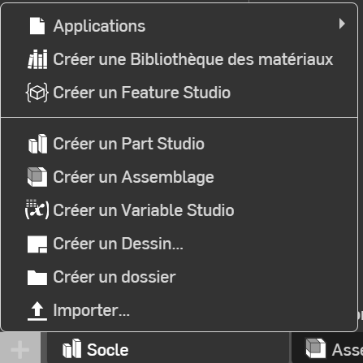
Reviens dans l'onglet Presse-papier. Clique sur Dériver (VERIF nom et emplacement de l'outil), choisis l'onglet de_55_calottes et valide.Le dé apparaît dans le Presse-papier, centré sur l'origine, à moitié enfoncé dans le socle. La liste Pièces compte maintenant deux pièces.
À savoir avant de commencer : Pas d'inquiétude s'il traverse le socle : on va le déplacer. Deux pièces qui se chevauchent ne se mélangent pas tant qu'on ne les réunit pas.
📷 Capture à venir — l'image de cet écran n'a pas encore été prise. Le texte ci-dessus suffit pour agir : Le dé dérivé dans le Presse-papier, centré sur l'origine, traversant le socle.
📷 Image du résultat à venir — voici ce que tu dois obtenir, en attendant la photo : Le dé à calottes, centré sur l'origine, qui traverse le socle.
🎯 Tu peux passer à la suite quand : Le dé et le socle sont deux pièces du même onglet Presse-papier.
💾 Point de reprise. Tu n'as rien à enregistrer : c'est déjà fait, tout seul, depuis le début. Si le poste redémarrait maintenant, tu retrouverais ton travail exactement ici.
Aide détaillée
7 · Séance 2 · Mettre le dé sur sa pointe
Deux rotations autour de deux axes, et la grande diagonale du dé se dresse à la verticale.
Crée une Esquisse sur le plan Top et trace deux lignes passant par l'origine : une horizontale, une verticale. Valide.Deux traits se croisent à l'origine : ce seront les deux axes de rotation.
📷 Capture à venir — l'image de cet écran n'a pas encore été prise. Le texte ci-dessus suffit pour agir : Deux lignes perpendiculaires se croisant à l'origine, sur le plan Top.
Clique sur Transformer, choisis le type rotation (VERIF libellé), sélectionne le dé, puis la ligne horizontale comme axe. Angle : 45.Le dé bascule d'un huitième de tour autour de la ligne horizontale : il se tient maintenant sur une arête.
📷 Capture à venir — l'image de cet écran n'a pas encore été prise. Le texte ci-dessus suffit pour agir : Le panneau Transformer en rotation, angle 45, et le dé posé sur une arête.
Ajoute un second Transformer en rotation, sur le dé, autour de la ligne verticale, angle 35.2644.Le dé bascule encore : il repose maintenant sur un seul coin, la diagonale bien droite.
À savoir avant de commencer : S'il penche trop au lieu de se redresser, clique sur Direction opposée : la rotation tourne dans l'autre sens.
📷 Capture à venir — l'image de cet écran n'a pas encore été prise. Le texte ci-dessus suffit pour agir : Le second Transformer, angle 35.2644, et le dé dressé sur sa pointe.
📷 Image du résultat à venir — voici ce que tu dois obtenir, en attendant la photo : Le dé dressé sur un de ses coins, vu de face : il est symétrique de part et d'autre de l'axe.
🎯 Tu peux passer à la suite quand : Vu de face, ton dé est symétrique de part et d'autre de la verticale, pointe en bas.
💾 Point de reprise. Tu n'as rien à enregistrer : c'est déjà fait, tout seul, depuis le début. Si le poste redémarrait maintenant, tu retrouverais ton travail exactement ici.
Aide allégée
8 · Séance 2 · Poser le dé sur le socle
Le dé est dressé, mais au mauvais étage. Une seule translation, verticale, le met en place.
Ajoute un Transformer, type Translater en XYZ, sur le dé. Laisse X et Y à 0, et dans Z tape 19 mm - #penetr + (#C / 2 - #Rde) * sqrt(3) + #Rde.Le dé monte d'environ 55,8 mm : sa pointe arrondie s'enfonce de ≈ 5 mm dans le dessus du socle.
À savoir avant de commencer : 19 mm, c'est la hauteur du dessus du socle. Taper la formule plutôt que 55,8 garde le calcul juste si tu changes une variable.
📷 Capture à venir — l'image de cet écran n'a pas encore été prise. Le texte ci-dessus suffit pour agir : Le panneau Transformer, Translater en XYZ, la formule dans Z, et le dé posé sur le socle.
📷 Image du résultat à venir — voici ce que tu dois obtenir, en attendant la photo : Le dé posé sur sa pointe au sommet du socle mouluré, vu de face.
🎯 Tu peux passer à la suite quand : La pointe du dé est enfoncée de quelques millimètres dans le dessus du socle, bien au centre.
💾 Point de reprise. Tu n'as rien à enregistrer : c'est déjà fait, tout seul, depuis le début. Si le poste redémarrait maintenant, tu retrouverais ton travail exactement ici.
Aide allégée
9 · Séance 2 · Creuser l'empreinte
Pour que le dé tienne, le socle doit avoir un creux exactement à sa forme — avec un petit jeu.
Clique sur Booléen (VERIF), choisis Soustraire. Dans Outils, le dé ; dans Cibles, le socle. Coche Garder les outils et Décalage, puis tape 0.25.Le socle se creuse à la forme de la pointe, 0,25 mm plus large tout autour, et le dé reste en place.
À savoir avant de commencer : Sans « Garder les outils », le dé disparaîtrait avec la soustraction : c'est lui qui sert d'emporte-pièce.
📷 Capture à venir — l'image de cet écran n'a pas encore été prise. Le texte ci-dessus suffit pour agir : Le panneau Booléen en Soustraire : outils le dé, cibles le socle, décalage 0.25, garder les outils.
Masque le dé (clic droit, Masquer) pour regarder le creux, puis réaffiche-le.Au sommet du socle, un creux en pointe arrondie, avec l'empreinte de trois faces du dé.
📷 Capture à venir — l'image de cet écran n'a pas encore été prise. Le texte ci-dessus suffit pour agir : Le socle seul, dé masqué : le creux laissé par la pointe du dé.
📷 Image du résultat à venir — voici ce que tu dois obtenir, en attendant la photo : Le socle vu de dessus, dé masqué : l'empreinte de la pointe au centre.
🎯 Tu peux passer à la suite quand : Le socle porte un creux à la forme de la pointe, et le dé est toujours là.
💾 Point de reprise. Tu n'as rien à enregistrer : c'est déjà fait, tout seul, depuis le début. Si le poste redémarrait maintenant, tu retrouverais ton travail exactement ici.
Aide détaillée
10 · Séance 3 · Emporter son travail : exporter, retrouver
Un travail qu'on ne retrouve pas n'a pas eu lieu. Ce dernier palier ne fabrique rien : il met ta pièce à l'abri et te donne le fichier que la machine attend.
Ne cherche pas de bouton Enregistrer : il n'y en a pas.Rien à l'écran ne dit « enregistré ». C'est normal : Onshape sauvegarde en continu, à chaque geste, dans ton compte.
À savoir avant de commencer : Si tu fais Ctrl+S par réflexe, c'est le navigateur qui répond, pas Onshape : il te propose d'enregistrer la page en HTML ou MHTML. Ce fichier ne contient pas ta pièce — seulement l'habillage de l'écran. Annule cette fenêtre. La seule chose qu'il faut penser à faire, c'est nommer le document, et ça se fait une fois pour toutes.
Vérifie le nom du document, en haut à gauche. S'il s'appelle encore « Sans titre », renomme-le maintenant : Dé sur socle - TES INITIALES.Le nom change dans le bandeau du haut.
À savoir avant de commencer : Dans une classe de vingt-huit, vingt-huit fichiers « Partie Studio 1 » ne se distinguent pas. Le nom du travail plus tes initiales, c'est ce qui te permettra de retrouver le tien.
Fais un clic droit sur l'onglet Presse-papier, en bas, puis choisis Exporter…Une fenêtre Exporter s'ouvre, avec un Nom du fichier, un Format et des options.
À savoir avant de commencer : Le format déjà choisi n'est pas toujours le même : Onshape reprend souvent celui de la dernière fois. Regarde-le à chaque export, ne le suppose jamais.
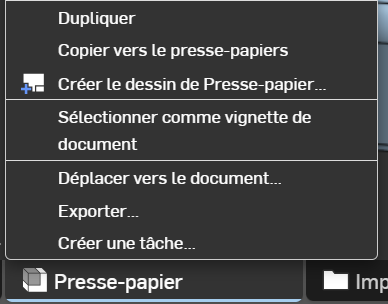
Choisis le format STEP.La liste propose une douzaine de formats. Deux comptent pour toi : STEP, que tout logiciel de CAO sait relire, et STL, que lit l'imprimante 3D.
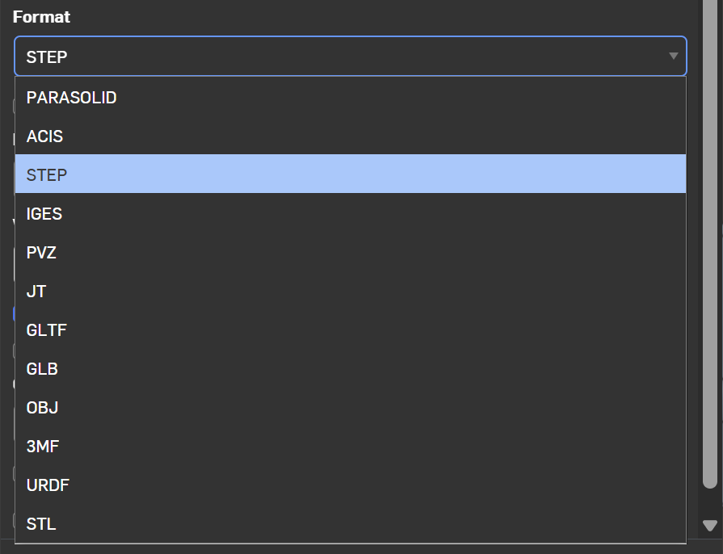
Quand tu choisis STL, trois réglages apparaissent. Le plus important est Unités : laisse ou choisis Millimeter.Trois listes s'ajoutent : Format STL, Unités, Résolution. Les noms d'unités restent en anglais.
À savoir avant de commencer : Un fichier STL ne contient que des nombres, sans unité écrite dedans : le logiciel de l'imprimante suppose des millimètres. Si tu laisses Mètre, un objet de 50 mm sera décrit par le nombre 0,05 — et la machine fabriquera un grain de cinquante microns, invisible. La description est juste, l'unité manque, la machine se trompe d'un facteur mille. C'est très exactement la question du TP : décrire assez précisément pour qu'une machine fabrique sans nous.
Laisse Format STL : Binaire et choisis Résolution : Fin.Les deux listes se ferment sur ces valeurs.
⚠️ Binaire ou texte, c'est la même géométrie écrite de deux façons : le texte se lit dans un éditeur — on y voit chaque triangle avec ses trois sommets — mais pèse cinq à six fois plus lourd. Ouvrir une fois un STL texte dans le Bloc-notes est une belle façon de voir qu'un objet 3D n'est qu'une liste de triangles. La résolution est la finesse de ce maillage : en Grossier, les facettes se voient sur les congés et les creux ronds ; en Fin, elles disparaissent, au prix d'un fichier plus gros.
Dans Options, choisis « Télécharger et stocker le fichier dans un nouvel onglet », puis valide.Le fichier descend dans tes téléchargements, et un onglet supplémentaire apparaît en bas de ton document Onshape.
À savoir avant de commencer : C'est le seul des trois choix qui protège ton travail. Sur un poste de collège, le dossier Téléchargements est souvent vidé, et tu ne repasseras pas forcément sur la même machine : un simple « Télécharger » revient à ne rien garder. Là, le fichier reste attaché au document et te suit.
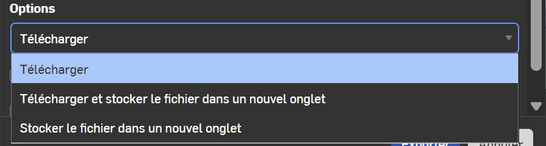
Pour une simple image — un compte rendu, le cahier de texte — n'exporte rien.Une icône d'appareil photo, dans la barre verticale à droite de la vue 3D, produit un PNG propre du modèle.
À savoir avant de commencer : Un export n'est pas un enregistrement : c'est une traduction de la pièce vers ce qu'une machine ou un autre logiciel sait lire — et chaque traduction perd quelque chose. L'original, celui qui garde l'histoire complète et les cotes modifiables, reste dans Onshape.
Ce que tu dois obtenir :
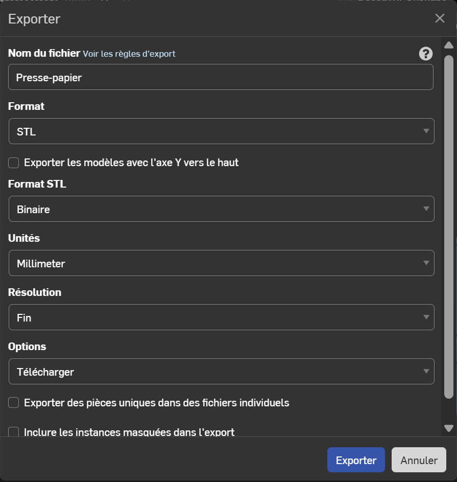
🎯 Tu peux passer à la suite quand : ton document porte ton nom, et le fichier exporté apparaît dans un onglet en bas de ton document.
À toi de jouer
11 · 🎁 Séance 3 · Ton presse-papier, et pas celui du voisin
Le travail est fini. Ce qui suit ne sert à rien — c'est exactement pour ça qu'on le fait. Et comme l'an dernier sur ton dé : la couleur dit ce que l'objet a l'air d'être, le matériau dit ce dont il est fait. Sur un assemblage, la différence saute aux yeux.
Dans la liste Pièces, fais un clic droit sur le socle, puis Modifier l'apparence… Choisis dans la palette une teinte de pierre — un gris chaud, un beige.Le socle change de couleur dans l'aperçu. Valide avec la coche verte.
Fais de même pour le dé : une couleur franchement différente, un doré par exemple.Les deux pièces se lisent d'un coup d'œil, et le dé cesse de se confondre avec son support.
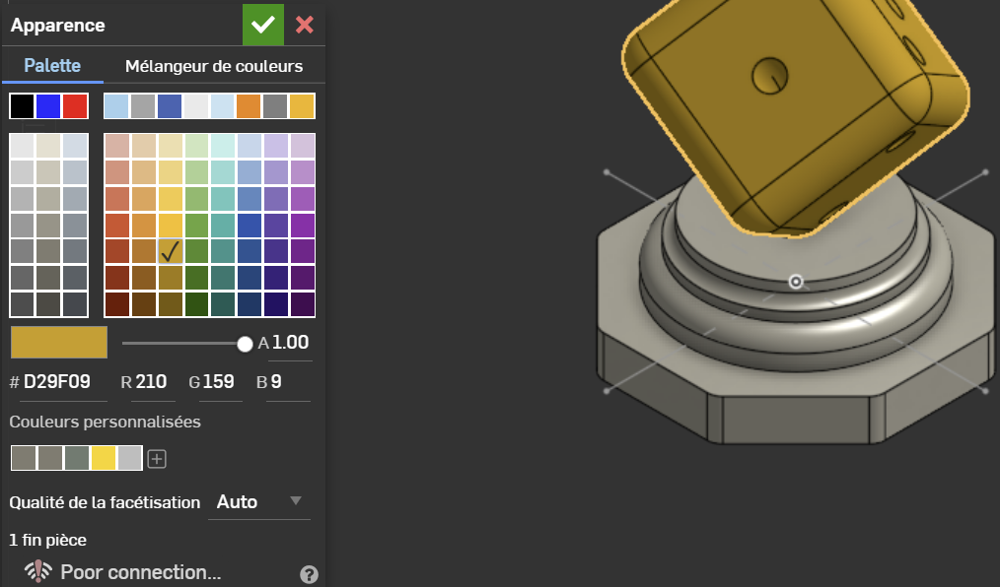
Mets d'abord la masse en grammes : menu ≡ en haut à gauche, Unités de l'espace de travail… Choisis Gram pour la masse et Gram per cubic centimeter pour la densité, puis valide.Les réglages se referment. Par défaut, Onshape comptait en livres (Pound) : un chiffre juste, mais dans une unité que personne n'utilise en France.
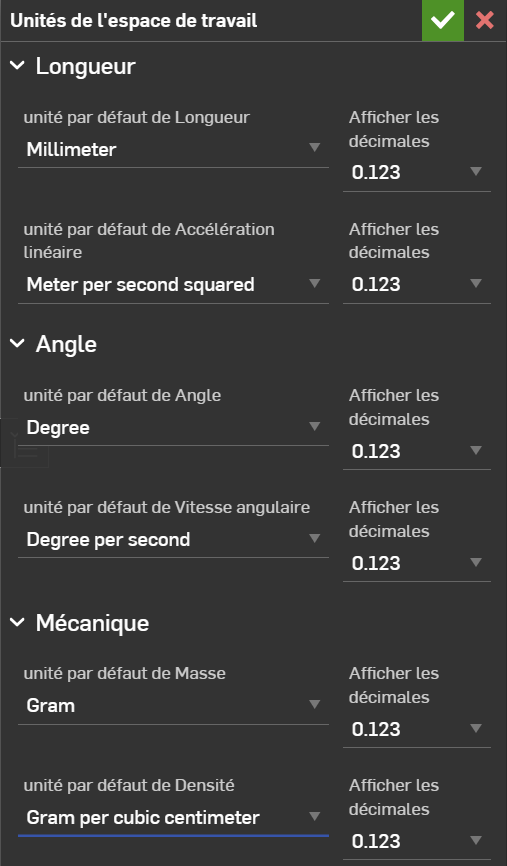
Clic droit sur le socle, Assigner un matériau… Choisis la bibliothèque Onshape Material Library, tape Bronze et prends Bronze (8-14% Sn). Donne de même au dé le matériau ABS.Les couleurs ne changent pas : le matériau décide de la masse, pas de l'apparence. Chaque matériau affiche sa densité.
À savoir avant de commencer : La bibliothèque proposée d'abord n'est pas celle d'Onshape : ouvre la liste du haut et choisis Onshape Material Library, sinon tu ne trouveras pas le bronze.
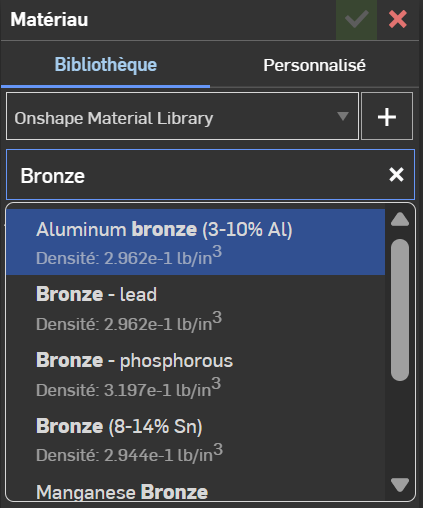
Ouvre les Propriétés de masse de chaque pièce, et additionne les deux masses : c'est la masse de ton presse-papier.Le socle en bronze pèse plusieurs kilos ; le dé en ABS, à peine plus de cent grammes.
À savoir avant de commencer : Un presse-papier doit être lourd, sinon il ne presse rien. Regarde ta masse totale et demande-toi si l'objet ferait le travail. C'est la première fois qu'un chiffre du logiciel te dit si ton objet est réussi.
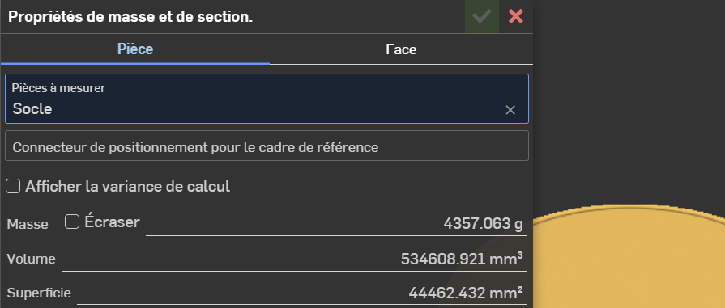
Tes nombres dépendent de ton propre socle et du bronze choisi : ceux-ci sont un exemple.
⚠️ Cette valeur est un exemple : ne la recopie pas sans réfléchir, choisis la tienne.
Oriente la vue comme tu la trouves belle et fais une capture d'écran.Ton presse-papier, en perspective, deux matières et une lumière qui glisse sur les moulures.
⚠️ Garde cette image : c'est elle que tu montreras, pas le fichier.
📷 Image du résultat à venir — voici ce que tu dois obtenir, en attendant la photo : Le presse-papier fini : le dé doré posé sur sa pointe, au sommet du socle octogonal couleur pierre.
🎯 Tu peux passer à la suite quand : Tes deux pièces ont des apparences distinctes, un matériau chacune, et tu sais dire la masse de ton presse-papier.
💾 Point de reprise. Tu n'as rien à enregistrer : c'est déjà fait, tout seul, depuis le début. Si le poste redémarrait maintenant, tu retrouverais ton travail exactement ici.
➡ Et maintenant ?
Tu sais faire décider une pièce par des variables, dessiner un polygone régulier, faire tourner un profil, déplacer un solide par rotations et translation, et creuser une forme dans une autre par soustraction.
Garde ton document. En 3e, on ne partira plus d'une procédure mais d'un besoin : un boîtier qui doit tenir dehors, sous la pluie — et personne ne te dira dans quel ordre le construire.
📜 Les traces à garder
Ce que cet atelier t'apprend tient en deux pages, à relire avant l'évaluation
et à garder dans ton classeur :
Il porte sur les trois gestes du TP : faire tourner un profil, réunir deux pièces dans un assemblage, et les centrer par une liaison.
🎁 Bonus (facultatif — hors parcours obligatoire)
Ces défis ne sont pas notés et ne comptent pas dans ta
progression. Personne n'est pénalisé de ne pas les faire.
Un socle plus étroit. Dans l'esquisse du profil, remplace la cote 70 par 60, puis reviens dans l'assemblage. Le socle a rétréci ; regarde où est passé le dé. C'est la force d'une liaison : elle suit la géométrie, au lieu de retenir une position.
Deux pièces, un seul fichier. Cherche dans Onshape ce qu'est un assemblage par rapport à une pièce, et écris en une phrase pourquoi on ne modélise pas le dé et son socle d'un seul bloc.
Un socle à deux étages. Redessine le profil en escalier : un rectangle large et bas, surmonté d'un rectangle plus étroit. La même révolution donne deux cylindres empilés — et leur volume total est la somme des deux volumes.